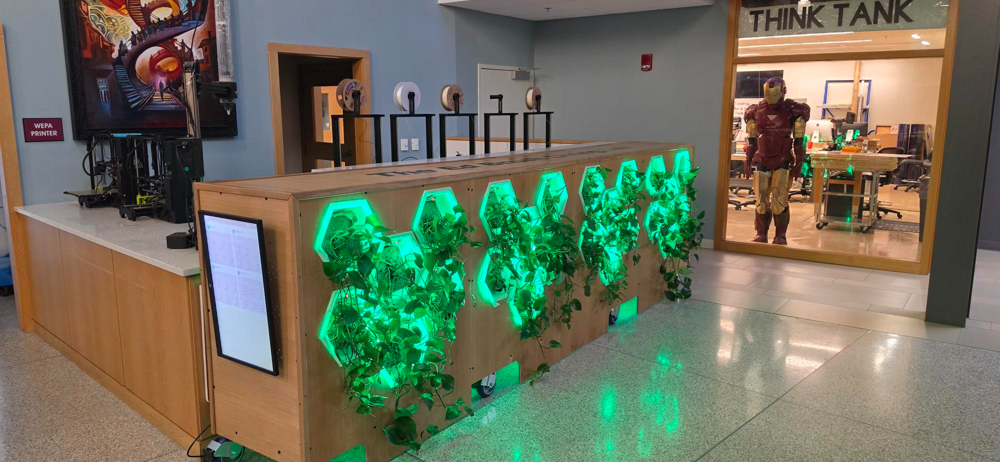

Greenwall, installed at the entrance to the BSU Think Tank
Project
Greenwall
The Greenwall is a self-watering hydroponic wall built at the BSU Think Tank. It holds 24 plant cells split across 4 sections, each monitored for soil moisture, temperature, and humidity, and watered automatically when a cell needs it. I did the software and electrical design and wrote the technical documentation, which is included in full below.
Hardware used
- 1x Raspberry Pi 5 (central controller, runs the Flask backend)
- 4x Arduino Mega 2560 with screw-terminal shields (one per section)
- 24x DHT11 temperature and humidity sensors (6 per section)
- 24x capacitive soil moisture sensors (6 per section)
- 24x solenoid valves (6 per section)
- 24x RGB LED strips, one per plant cell
- 1x submersible water pump
- 1x Adafruit PMSA003I air quality sensor
- 2x wall fan relays and 6x cell fan relays per section
Photos
Full technical writeup
Engineering philosophy
The Greenwall was built around a few core ideas that shaped every design decision throughout the project.
Simplicity over complexity
The system avoids over-engineering wherever possible. Rather than running a database, a message broker, or a containerized microservices stack, the entire backend is a single Python file. State is saved to a JSON file on disk. Configuration is a dictionary at the top of the file. This makes the system easy to understand, easy to debug, and easy to hand off to someone who did not build it. If something breaks, the fix is usually a few lines of code and a service restart.
Reliability under real conditions
The wall runs 24 hours a day in a public space. Reboots happen, Arduino connections drop, sensors give bad readings, and the network goes down. Every piece of the system is built to recover gracefully. Serial reader threads reconnect automatically. The moisture sensor requires three consecutive dry readings before triggering a watering to prevent false positives. Watering cooldowns are written to disk after every event so they survive a power cycle. Flask runs with threaded=True so a slow API call does not block the dashboard from updating.
Distributed responsibility
The Arduinos are kept as simple as possible. They read sensors, drive outputs, and listen for commands. They do not make scheduling decisions, they do not queue waterings, and they do not talk to each other. All of that logic lives in app.py on the Pi, which has the memory, the clock, and the networking to handle it properly. This also means the watering logic can be changed, tuned, or completely replaced without touching the Arduino firmware.
Separation of concerns
Hardware control, data serving, UI rendering, and cloud logging are four separate concerns handled by four separate layers. The Arduinos handle hardware. Flask handles data and control. The dashboard and control panel handle display. The logger handles external reporting. Each layer communicates with the one above or below it through a clean interface: serial JSON packets from Arduino to Pi, a REST API from Pi to browser, and HTTP POST requests from Pi to Wix. This means any layer can be modified or replaced without breaking the others.
System overview
The Greenwall is a living plant wall that monitors and waters itself. It tracks soil moisture, temperature, and humidity across 24 individual plant cells organized into 4 sections of 6 cells each. When a cell gets dry, the system waters it. LEDs on each cell reflect plant health in real time. A vertical monitor on the wall displays live sensor data cycling through all four sections.
Hardware architecture
Central controller
A Raspberry Pi 5 running Raspberry Pi OS (Wayland) serves as the central controller. It connects to all four Arduino boards over USB serial, runs the Flask backend and web interfaces, and handles all watering logic and scheduling.
Per-section hardware
Each of the four sections has a dedicated Arduino Mega 2560 with a screw-terminal shield. Each Arduino manages:
- 6x DHT11 temperature and humidity sensors
- 6x capacitive soil moisture sensors
- 6x fan relay modules
- 6x solenoid valves
- 6x RGB LED strips, one per cell
Board 1 additionally manages:
- One submersible water pump relay
- One Adafruit PMSA003I air quality sensor over I2C
- Two wall fan relays
USB port mapping
| Board | Section | USB Port |
|---|---|---|
| 1 | 1 (cells 1-6) | /dev/ttyACM1 |
| 2 | 2 (cells 7-12) | /dev/ttyACM2 |
| 3 | 3 (cells 13-18) | /dev/ttyACM0 |
| 4 | 4 (cells 19-24) | /dev/ttyACM3 |
Plumbing
One submersible pump pressurizes a shared water line. Individual solenoid valves on each cell control water delivery. Because the system has no flow sensors, watering is purely time-based. Each solenoid has a calibrated open duration in seconds, determined experimentally based on tube length and distance from the pump. The Pi opens a solenoid, waits the configured duration, then closes it.
Arduino firmware
Overview
All four boards run the same sketch with board-specific constants at the top: BOARD_ID, CELL_START (the global cell number of the first cell on this board), and the solenoid pin mapping for Board 4 which differs from the others. The sketch does three things continuously: reads sensors, sends JSON packets to the Pi, and listens for serial commands.
Sensor reading
DHT11 sensors are read one at a time on a rotating index, advancing one sensor per loop iteration on a 1-second interval. This stagger prevents the blocking DHT read from causing a noticeable delay on every loop cycle. Moisture sensors are read via analogRead on every loop iteration since they are non-blocking.
Serial packet
Every 3 seconds each Arduino sends a JSON packet over serial at 9600 baud. The packet includes board ID, an array of per-cell readings, AQI from the air quality sensor, and pump state. Board 1 also includes wall fan state. Boards 2 through 4 send zeros for those fields since the pump and wall fans are only wired to Board 1.
Command handler
The Arduino listens for newline-terminated ASCII commands on the serial port and executes them immediately. Supported commands:
| Command | Effect |
|---|---|
| PUMP_ON / PUMP_OFF | Board 1 only. Controls the pump relay. |
| SOL_ON_N / SOL_OFF_N | Opens or closes solenoid N (1-6). |
| ALL_SOL_OFF | Closes all solenoids on this board. |
| FAN_ON_N / FAN_OFF_N | Controls cell fan relay N. |
| ALL_FAN_ON / ALL_FAN_OFF | All cell fans on or off. |
| LED_R/G/B/W/OFF_N | Sets cell N LED to a color or off. |
| ALL_LED_R/G/B/W/OFF | Sets all LEDs to a color or off. |
| BREATHE_GREEN / BREATHE_STOP | Starts or stops the green breathe animation. |
| WALL_FAN_ON / WALL_FAN_OFF | Board 1 only. Toggles wall fan relays. |
| AUTO_MODE / MANUAL_MODE | Switches sensor-driven behavior on or off. |
Auto vs manual mode
Two boolean flags on each Arduino control whether sensor readings drive outputs: manualFanOverride and manualLedOverride. When both are false (AUTO), the Arduino runs fans based on temperature and sets LED colors based on moisture. When true (MANUAL), sensor-driven behavior is suppressed and the Pi has full control.
LED color logic in AUTO mode:
- Raw moisture below 215: red (dry)
- Raw moisture 215 to 950: green (optimal)
- Raw moisture above 950: blue (wet)
- Raw moisture above 1000: off (sensor unplugged)
Fan logic in AUTO mode:
- Temperature above 28 degrees C: fan on
- Temperature below 25 degrees C: fan off
On boot, both flags are false so the system starts in AUTO mode. The Pi sends AUTO_MODE or MANUAL_MODE over serial to toggle the flags on all four boards when the mode is changed from the control panel.
Flask backend (app.py)
Architecture
The backend is a multithreaded Flask application. On startup it launches seven daemon threads and then runs Flask on the main thread using the built-in development server with threaded=True. This configuration was chosen for simplicity. The wall does not require the concurrency of a production WSGI server and the built-in server handles the low request rate of a local dashboard without issue.
The seven daemon threads are:
| Thread | Count | Purpose |
|---|---|---|
| read_serial | 4 | One per Arduino. Holds serial port open, parses JSON packets, updates sensor data, feeds dry cell detection. |
| dry_queue_worker | 1 | Monitors the dry cell queue. Turns pump on, waters queued cells sequentially, turns pump off. |
| weekly_scheduler | 1 | Sleeps until Wednesday 9:05 AM, then triggers the weekly watering cycle. |
| check_wall_fans | 1 | Counts hot cells every 10 seconds, toggles wall fans based on threshold. |
Threading and locking
Python threads share memory, which means shared mutable state must be protected from concurrent access. The app uses seven threading.Lock objects. Every read or write to shared state acquires the appropriate lock before proceeding and releases it after.
| Lock | Protects |
|---|---|
| data_lock | greenwall_data dict (all sensor readings) |
| pump_lock | pump_running flag and pump state transitions |
| serial_lock | All serial port writes across all four boards |
| dry_queue_lock | dry_queue deque, already_queued set, last_watered dict |
| wall_fan_lock | wall_fan_state flag |
| log_lock | watering_log list |
The serial_lock is particularly important. Multiple threads may need to send commands to different boards at the same time. For example, the dry queue worker may be opening a solenoid on Board 2 while an API request arrives to toggle an LED on Board 1. The serial_lock ensures these writes do not interleave and corrupt the command stream. Each serial write is followed by a 200ms sleep to give the Arduino time to process the command before another arrives. The Arduinos use blocking readline() and a simple string comparison command handler, so commands arriving faster than they can be processed would be silently dropped.
Dry cell detection
Moisture readings arrive approximately every 3 seconds from each board. The detection pipeline works as follows:
- Each reading is compared against DRY_THRESHOLD (215 raw)
- A consecutive dry count is maintained per cell in the dry_counts dict
- The count increments on each dry reading and resets to zero on any non-dry reading
- Only after DRY_CONFIRM_READINGS (3) consecutive dry readings is the cell queued for watering
- Before queuing, the last_watered timestamp is checked against CELL_COOLDOWN (3600 seconds)
- If the cell was watered within the last hour, it is skipped regardless of moisture
- If the cell is already in the queue (tracked via already_queued set), it is not added again
The three-reading confirmation requirement means a single glitchy sensor reading cannot trigger a watering. At 3 seconds per reading, a cell must be continuously dry for at least 9 seconds before anything happens. In practice with capacitive sensors in soil, a legitimate dry reading is stable over many minutes.
Watering queue
The dry queue is a collections.deque. The dry_queue_worker thread checks it every 5 seconds. When it finds cells in the queue and the pump is not already running, it begins a watering run:
- Sends PUMP_ON to Board 1
- Waits 120 seconds for the water line to pressurize
- Sets pump_running to True
- Iterates through the queue, opening each solenoid for its configured duration, then closing it, with a 2-second pause between cells
- After the queue is empty, sends PUMP_OFF and sets pump_running to False
The pump stays on for the entire duration of a queue drain. This avoids the pressure loss that would occur from cycling the pump per cell, which could result in inconsistent water delivery, especially for cells at the end of longer tubing runs. If additional cells become dry while a drain is already running, they are added to the queue and watered in the same run before the pump shuts off.
Per-cell solenoid durations
Each of the 24 solenoids has a calibrated open duration stored in SOLENOID_DURATIONS, a dict keyed by (board_id, cell_index) where cell_index is zero-based. These values were determined by running water through each cell and timing how long it took to deliver an appropriate amount. Cells farther from the pump or with longer tube runs have longer durations to compensate for lower pressure.
| Board | Cell 1 | Cell 2 | Cell 3 | Cell 4 | Cell 5 | Cell 6 |
|---|---|---|---|---|---|---|
| 1 | 8s | 9s | 9s | 13s | 8s | 9s |
| 2 | 11s | 6s | 5s | 4s | 8s | 12s |
| 3 | 8s | 6s | 7s | 9s | 8s | 9s |
| 4 | 8s | 7s | 7s | 10s | 8s | 8s |
Weekly watering cycle
The weekly_scheduler thread sleeps until Wednesday at 9:05 AM, then calls run_weekly_cycle in a new thread. The 9:05 AM start time was chosen so that someone can be present when the cycle runs to observe and verify that water is reaching each cell correctly.
The weekly cycle:
- Turns the pump on
- Waits 120 seconds to pressurize
- Iterates through all 4 boards in order
- For each board, iterates through cells 1 through 6 in order
- Opens each solenoid for its configured duration, closes it, waits 2 seconds, then moves to the next
- After all 24 cells are done, turns the pump off
- Resets all cooldown timestamps so dry detection starts fresh
The entire cycle is sequential. No two solenoids are open at the same time, which prevents pressure drops that would reduce flow to later cells in the sequence.
Wall fan auto-control
The check_wall_fans thread counts how many cells across all four sections are reading above 28 degrees C every 10 seconds. If more than 6 cells are hot, it sends WALL_FAN_ON to Board 1. If the count drops to 6 or below, it sends WALL_FAN_OFF. This only runs in AUTO mode. In MANUAL mode the wall fans can be toggled directly from the control panel or API.
State persistence
The last_watered dict maps global cell index to the Unix timestamp of the last watering. Global cell index is computed as (board_id - 1) * 6 + cell_index where cell_index is zero-based, giving indices 0 through 23. After every watering event, save_state() writes this dict to greenwall_state.json in the project directory. On startup, load_state() reads it back. This means cooldowns survive a power cycle or reboot. If the file is missing or corrupt, last_watered starts empty and all cooldowns reset, which is a safe failure mode.
REST API
Flask exposes the following API surface:
| Category | Endpoints |
|---|---|
| Sensor Data | GET /api/data, GET /api/data/<board_id>, GET /api/health |
| Mode | GET /api/mode, POST /api/mode/auto, POST /api/mode/manual |
| Pump | POST /api/pump/on, POST /api/pump/off, POST /api/pump/trigger |
| Wall Fans | POST /api/wallfan/on, POST /api/wallfan/off, GET /api/wallfan/status |
| Cell Fans | POST /api/fan/<board>/<cell>/on|off, POST /api/fan/<board>/all/on|off |
| LEDs | POST /api/led/<board>/<cell>/<color>, POST /api/led/<board>/all/<color>, breathe variants |
| Solenoids | POST /api/solenoid/<board>/<cell>/on|off|timed |
| Logs | GET /api/watering_log, GET /api/solenoid_durations |
| Pages | GET / (dashboard), GET /control (control panel) |
Control panel (control_panel.html)
Overview
The control panel is a single-page application served at /control. It provides full manual control over all hardware outputs and allows switching between AUTO and MANUAL system modes. It is designed for use during setup, testing, and demonstration rather than everyday monitoring.
Why manual mode exists
In AUTO mode, the Arduinos respond directly to sensor readings. If the temperature rises above 28 degrees C, fans turn on. If moisture drops below the dry threshold, the LED turns red. These behaviors happen continuously and cannot be overridden without switching modes. This means that if someone opens the control panel and tries to set all LEDs to white for a demonstration, the Arduinos will immediately overwrite that command with red or green on the next sensor read cycle, which happens every 3 seconds.
MANUAL mode exists specifically to prevent this. When the Pi sends MANUAL_MODE to all four Arduinos, the manualFanOverride and manualLedOverride flags are set to true. From that point forward, the Arduinos execute commands from the Pi but ignore their own sensor-driven logic. The Pi is now in full control, and commands issued from the control panel stick.
This was essential during development and testing. Being able to hold the LEDs at a specific color, open a solenoid manually, or run the pump in isolation without the sensor loop interfering made it possible to verify each component in isolation before integrating them. Without MANUAL mode, testing any individual output would have required disabling sensor logic in the firmware, reflashing the board, testing, then reflashing again. With MANUAL mode it is a single button press on the control panel.
MANUAL mode is also the right setting for live demonstrations. When showing the wall to visitors or presenting at an event, the ability to trigger the breathe animation, set all LEDs to a custom color, open a specific solenoid on command, or show the pump running without waiting for dry cells makes the system significantly more compelling to watch. MANUAL mode is where the wall becomes interactive.
The control panel is therefore most useful in MANUAL mode. In AUTO mode the panel can still send commands but many of them will be overwritten within seconds. The mode toggle button at the top of the control panel makes switching between the two straightforward, and the Pi broadcasts the mode change to all four boards simultaneously so they stay in sync.
Mode toggle
A button in the header shows the current mode and toggles between AUTO and MANUAL on click. In AUTO mode the button is green with a filled circle indicator. In MANUAL mode it is amber with an open circle indicator. Switching to MANUAL sends MANUAL_MODE to all four Arduinos over serial, which suppresses sensor-driven fan and LED behavior. Switching back to AUTO sends AUTO_MODE to all boards and re-enables dry cell detection and the weekly scheduler.
Global controls
A bar at the top of the page provides controls that apply to all four sections simultaneously:
- Fans ON / Fans OFF: sends ALL_FAN_ON or ALL_FAN_OFF to all boards
- Wall Fans ON / Wall Fans OFF: sends WALL_FAN_ON or WALL_FAN_OFF to Board 1
- Pump ON / Pump OFF: directly controls the pump relay on Board 1
- LED color buttons: sets all LEDs on all boards to the selected color
- Breathe / Stop Breathe: triggers the green breathe PWM animation on all boards
These controls hit the corresponding REST API endpoints which queue the appropriate serial commands. The LED and fan controls only take effect visually in MANUAL mode since AUTO mode on the Arduinos will override them with sensor readings.
Per-section cards
Below the global bar, four section cards are displayed in a grid. Each card provides:
- An LED color dropdown that sets all six cells in the section to one color
- Six fan toggle switches, one per cell
- Six solenoid toggle switches, one per cell
- A hexagonal cell grid for selecting individual cells
- A cell action bar for applying commands to selected cells
Hex grid and cell selection
Each section card contains an SVG hex grid with six hexagonal cells arranged in the physical layout of the wall. Clicking a hexagon toggles it between selected and deselected. Selected cells are highlighted with a darker border. Once cells are selected, the action bar buttons apply commands only to those cells:
- Color buttons: sends LED_R/G/B/W/OFF_N for each selected cell number
- Sol Open / Sol Close: sends SOL_ON_N or SOL_OFF_N for each selected cell
The hex grid SVG is built programmatically from a CENTERS array of coordinate pairs, with hexagon points calculated using the flat-top hexagon formula. Cell state (LED color, fan state, solenoid state) is tracked in a JavaScript state object per section and reflected in the SVG fill colors and toggle switch states.
Status polling
The control panel polls /api/data and /api/mode every 5 seconds to keep the online/offline badges and mode button in sync with the actual system state. It does not re-render the full card layout on each poll to avoid resetting user selections. Only the status badges and mode button are updated from poll results.
Toast notifications
Every action triggers a small toast notification in the bottom right corner confirming what was sent. The toast fades in, displays for 2 seconds, then fades out. This gives the user feedback that the command was dispatched without requiring a modal or page reload.
Dashboard (index.html)
The dashboard is a fullscreen single-page application served at the root URL. It is displayed on the vertical monitor in kiosk mode and is designed to be read from a distance.
Fullscreen cycling layout
Rather than showing all four sections at once, the dashboard shows one section at a time and cycles through them every 7.5 seconds. Each section card is absolutely positioned to fill the full viewport below the header with opacity 0. The active section has opacity 1. Transitions between sections use a 0.5-second CSS opacity fade. Dot indicators at the bottom show the current section and are clickable to jump directly to any section, which also resets the cycle timer.
Sizing
All font sizes and padding values use vw and vh units rather than fixed pixels. This ensures the layout fills the vertical monitor correctly regardless of resolution and scales proportionally with the viewport. Since the monitor is rotated 90 degrees, vw corresponds to the physically shorter dimension of the screen.
Data display
The dashboard polls /api/data every 3 seconds. AQI and pump state are taken from Board 1 and displayed identically on all four sections since those sensors are only wired to Board 1. Each cell card shows temperature, humidity, and soil moisture with color-coded text and a moisture bar matching the LED color: red for dry, green for optimal, blue for wet.
Wix CMS logger (logger.py)
A lightweight background service that runs alongside the Flask app, managed by the greenwall-logger.service systemd unit. It serves two purposes: hourly sensor snapshots and near-real-time watering event logging. Every hour it fetches /api/data from the local Flask API and POSTs each per-cell reading to the SensorReadings collection on bsuthinktank.com via a Wix HTTP function. Every 30 seconds it fetches /api/watering_log and checks for events it has not yet pushed, identified by a string key of timestamp combined with board_id and cell. New events are POSTed to the WateringLog collection. This deduplication approach means the logger can be restarted without creating duplicate entries.
Boot sequence
| Step | What happens |
|---|---|
| 1 | Raspberry Pi OS boots |
| 2 | greenwall.service starts app.py via systemd |
| 3 | greenwall-logger.service starts logger.py (After=greenwall.service) |
| 4 | Chromium launches in kiosk mode at http://localhost:5000 after a 15-second delay |
| 5 | Screen rotation applied via wlr-randr in autostart |
| 6 | Serial reader threads connect to each Arduino and begin receiving data |
| 7 | STARTUP_DELAY (120 seconds) passes before dry cell detection activates |
The Pi reboots nightly at 9:00 PM via cron. The weekly watering cycle runs Wednesday at 9:05 AM, so that someone can be present to watch the cycle and confirm everything is working as expected.
Known limitations
- No flow sensing. Watering is purely time-based. A kinked tube, failed solenoid, or low reservoir cannot be detected automatically.
- DHT11 accuracy is plus or minus 2 degrees C and plus or minus 5% relative humidity. Sufficient for plant monitoring but not precision measurement.
- The watering log is in-memory only and is lost on reboot. Wix CMS is the permanent record.
- The weekly cycle and a dry trigger run cannot overlap. If a dry trigger is running when the weekly cycle fires, the weekly cycle waits for the pump lock to be released.
File structure
| File | Purpose |
|---|---|
| app.py | Flask backend, watering logic, serial communication, REST API |
| logger.py | Wix CMS sensor and watering event logger |
| index.html | Live monitoring dashboard (fullscreen, cycling) |
| control_panel.html | Manual control interface |
| greenwall_state.json | Persisted watering cooldown state (autogenerated) |
| mega1_sender.ino | Arduino firmware for Section 1 (pump, AQI, wall fans) |
| mega2_sender.ino | Arduino firmware for Section 2 |
| mega3_sender.ino | Arduino firmware for Section 3 |
| mega4_sender.ino | Arduino firmware for Section 4 |
Dependencies
Python
- flask
- flask-cors
- pyserial
Arduino libraries
- Adafruit DHT
- Adafruit PM25 AQI
Frontend
- Space Mono and Syne fonts via Google Fonts
System
- greenwall.service (systemd)
- greenwall-logger.service (systemd)
- Chromium in kiosk mode
- wlr-randr for screen rotation
Credits
Software and electrical design: Chris Felumero.
Plumbing design: Robert Monteith, Cynthia Scott, and Noah Clive.
Mechanical design: Robert Monteith and Chris Felumero.
Physical wiring: Chris Felumero, Cynthia Scott, Andrew Vronsky, and Candace Williams.
Physical assembly: Robert Monteith, Chris Felumero, Cynthia Scott, Sophia Macqueen-Pooler, Andrew Vronsky, Ella Sherman, Mukti Patel, and Candace Williams.
Documentation: Chris Felumero.
Built at BSU Think Tank.